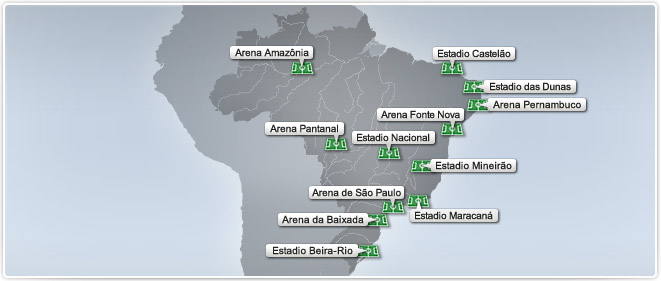
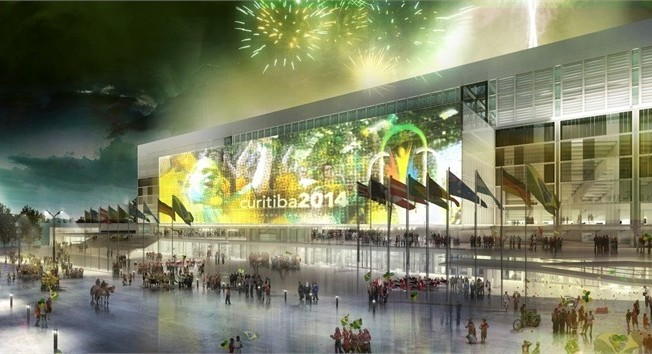
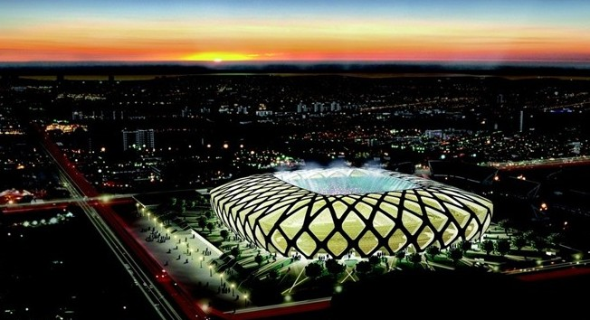
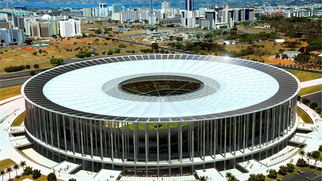
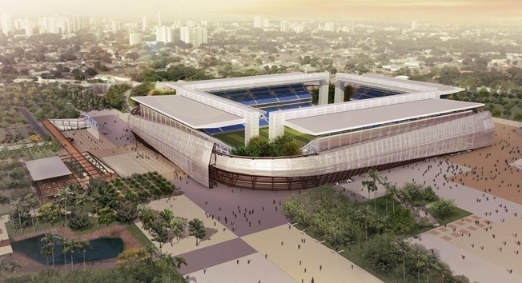

Estadios


Arena da Baixada - Curitiba
Desde que fue reinaugurado en junio de 1999, tiene la reputación de ser uno de los estadios más modernos de Brasil.

Estadio Castelão - Fortaleza
Construido en 1973, el Estadio Gobernador Plácido Castelo será remodelado para dar cabida a 64.165 personas.

Arena Amazônia - Manaos
Atraerá a un gran número de hinchas gracias a su ubicación privilegiada, en el corazón de la selva más extensa del mundo.

Estadio Mineirão, Belo Horizonte
La casa de Atlético Mineiro y Cruzeiro será reformada para alojar seis partidos de Brasil 2014, incluida una semifinal....

Estadio Nacional - Brasilia
Seguirá el patrón de una de las ciudades arquitectónicamente más modernas del país y será el segundo estadio más grande de Brasil 2014.

Arena Pantanal - Cuiabá
El estadio de una región de flora y fauna tan rica no podía dejar de incluir entre sus objetivos la construcción de una estructura sostenible.